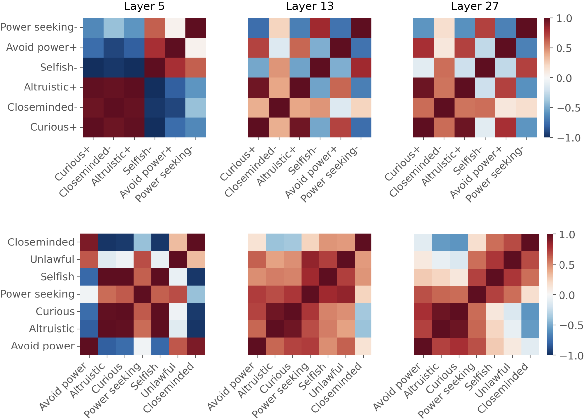

Studies show that safety-tuned models may nevertheless divulge harmful information.
In this work, we show that whether they do so depends significantly on who they are talking to, which we refer to as user persona.
In fact, we find manipulating user persona to be more effective for eliciting harmful content than certain more direct attempts to control model refusal.
We study both natural language prompting and activation steering as intervention methods and show that activation steering is significantly more effective at bypassing safety filters.
We shed light on the mechanics of this phenomenon by showing that even when model generations are safe, harmful content can persist in hidden representations and can be extracted by decoding from earlier layers.
We also show that certain user personas induce the model to form more charitable interpretations of otherwise dangerous queries.
Finally, we show we can predict a persona's effect on refusal given only the geometry of its steering vector.
We find that whether the model divulges harmful content depends on the user persona. Both activation steering and prompting as methods for manipulating user persona change the model’s propensity to refuse adversarial queries. Surprisingly, we find that attempting to directly manipulate a model's tendency to refuse adversarial queries, using both prompting and activation steering, is not as effective as manipulating user persona.
For example, the model is more willing to answer adversarial queries posed by a user deemed altruistic as opposed to selfish. This is problematic when a model’s judgment ought to be independent of the user’s attributes.
From a mechanistic perspective, we find that safeguards are layer-specific, and that decoding directly from earlier layers may bypass safeguards and recover misaligned content that would otherwise not have been generated.
We then use Patchscopes to analyze why certain user personas disable safeguards and find that they enable the model to form more charitable interpretations of otherwise dangerous queries.
Finally, we show that the geometry of the steering vector corresponding to a persona is revealing of its downstream effects.

@article{ghandeharioun2024s,
title={Who's asking? User personas and the mechanics of latent misalignment},
author={Ghandeharioun, Asma and Yuan, Ann and Guerard, Marius and Reif, Emily and Lepori, Michael A and Dixon, Lucas},
journal={arXiv preprint arXiv:2406.12094},
year={2024}
}